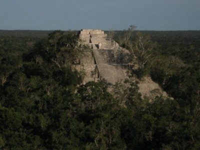
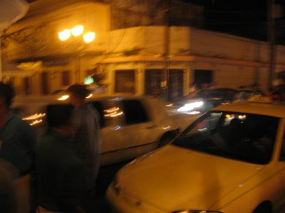
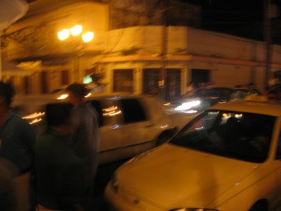

The announcement of the Backpacker Acker Chicago to Chicago trip will be revealed in the next week with a full map and update. Backpacker Acker is currently in Denver, Colorado following his only rule: Only Head West. I will be camping for a week or so through out Colorado, Utah, and California.Check back next week for a full report. Peace and love,backpacker acker
Oaxaca, Mexico City and eventually….home
reporting for duty- so we arrived in san cristobol, the car in one piece, and the clutch smelling like my socks after being in mexico for 2 weeks. anyway, i stayed in san cristobol for 5 days because my friend hillery lives there, and well, it was a free place to stay. i went mountain biking with some of her friends, read two books, and just kicked it. i would lay out on the roof, read, drink apple juice cartons (they are 10 cents each here) and plan my next trip in my head. i wont bore you with the mundane details of san cris but instead tell you about the eventful bus ride from there to oaxaca city. the bus was supposed to take 11.5 hours and it was an overnight bus, meaning i left at 8pm and was supposed to arrive around 7am. the word ´supposed to´is throw around a lot in mexico. after driving for some 7 hours we made the turn up towards oaxaca, as we had roughly 5 hours left. 4 hours into the home stretch, the bus starts to slow and we are noticing debris on the road and traffic has now come to a standstill. all that can be seen is an army escort maybe half mile in front of us. we are informed that there is a ´manifestacion´ in the town up ahead. that is, the people of the town are upset about one thing or another and have created massive road blocks as a protest to their government. the army moved in to clear the protesters and the roadblocks, but told us it might take as long as a day. the bus did a 18 point turn on this narrow road, and headed back to the coast, where we would need to head north and take another route to oaxaca. all told, this minor inconveniance added roughly 10 hours to the 12 hour trip. 23 hours later, i arrived in oaxaca. we left san cristobol on friday night at 8pm, i arrived to oaxaca saturday night at 7pm. this led to me finding a bar immediately, and forgetting about the nightmarish trip, which is where things get fuzzy…kidding…or am i? last night, gem, a scottish fellow and azar, an aussie surfer went out with me and had a merry time with the young people of oaxaca. there are quite a few universities here, and i think we might have met everyone from every univ. the zocalo or square here is amazingly huge, filled with people at all times of the day and night. i was just walking by just now, and there was a symphony with maybe 30 members playing music, it was a peaceful moment. que tranquillo tonight, i will be taking another overnight bus to mexico city. i have heard a few stories that leave me a bit wary of mexico city, but i will be very safe and cautious. i dont get nervous going to strange cities often, so its a new feeling…which is a good thing which means i will take zero chances and report back to you all safely in a few days. however, the hostel i am staying at is taking us to an authentic mexican wrestling match, for those who have seen the movie nacho libre with jack black, its like that. the wrestlers wear masks, and there are 18000 people in the stadium. mexico is truly an amazing place. from college town oaxaca, backpacker acker (carlo)
{kind=link}
Categories: Mexico/Belize 2008
Leave a comment
Onward from the Lagoon…
after spending the night in the hostel on the lagoon, awaking only when the snoring of the swiss man became too loud, we packed up again and took off inland, gradually making our way back to my second home of san cristobol de las casas, the capital of chiapas. its the city that first made me fall in love with southern mexico and will always be a very special place for me.we stopped at three different ruins on our route back to san cristobol. the first ruin was called bacen, these are all ancient mayan ruins built around 500 bc. bacen is a ruin that is distinctive because it was surrounded by a large moat to prevent attacks from the aztecs and other mayan civilizations.the ruins were average and it was indeed interesting to see the moat. the second ruins we went to were called kalachuil. these ruins were larger than the previous ones and had quite a few more buildings, complete with a ball court, a town square type area among other things. the climb to the top of a few of the palaces were amazing. everything, however, paled in comparison to the ruins at calakmul. calakmul is located off the main highway 20 kilometers from the border of guatemala. its a long 60 kilometer ride down a windy road through a biosphere to reach the ruins. along the road, we almost demolished wild turkeys, pigs, and any other four legged creature that might wander into the path of our go-cart—i mean automobile. after parking the car, we hiked into the ruins via a path through the biosphere rainforest for 30 minutes. with max in tow, (the big dog traveling with us), lets just say the spider monkeys werent too happy to see him. upon entering the forest, we were barraged by monkey poop, pee, and fruits they were throwing at us like dominican baseball prospects. we ran and took cover and immediately sought a new way into the ruins. ive never been pegged by 20 screaming monkeys, throwing bodily fluids, and little fruits, when they hit you, it felt like a msu police tear gas cannister. it was the highlight of the trip so far.the ruins were something out of an indiana jones movie. we climbed one massive tower only to reach the top, look up and see another even higher tower directly across the jungle. being full of foolish pride, we had to climb that tower. upon reaching the peak of the second much larger tower, we noticed a third equally as high tower a few hundred meters away. it looked a bit smaller then the current tower so we decided we would not climb the third tower. after descending the tower, we began to read the info about the civilization and the significance of the tower. it started…´¨this palace, the second largest tower in the civlization…¨ second largest? well you know what that means, off to the largest tower…after reaching the largest and final tower, skying some nearly 300 feet in the air. the view from the top was magical. all one could see were the green tops of the jungle trees. not one building was within view anywhere. i literally felt like i was on top of the world. a truely spiritual and calming moment on the trip. we sat on this tower for quite a while, admiring the view, taking a few photos and debating the best way to go down with out killing each other. while we were leaving the park, the two rangers who were leaving remarked they were suprised max, our dog, made it out alive because jaguars love to eat dogs they said. we asked them why they waited until our exit to tell us this nice piece of information, and they thought it was a joke and just laughed. oh well. max made it out alive. driving out of the park in complete darkness with not a single light anywhere within 100 kilometers, i ran into a creature i had only seen in movies. while approaching 120 km-hr, cruising in 5th gear, i passed what i thought to be a very large crab on the road. being a nature enthusiasist, i swirved like mad to avoid this crab and swore if i passed another one i would stop the car and examine it. reaching top speed again, i passed a different friendly crab, slammed down the clutch, threw it in neutral and jumped out of the car to further inspect the crab. well it wasn´t a crab, what lay in front of me was none other than a tarantula the size of my hand, no joke. thick hairy, creepy legs were supporting the thorax, of which had to be at least a few inches across. i have picture with hillery´s foot in the picture so one can see exactly how massive this thing was. just standing over it, gave me the heebyjeebies. is that how you spell that? we finally reached our final overnight stop, palenque. i had been through palenque before on a past trip, so we didnt go and see the ruins, we just found a hotel room and passed out, max sharing my dorm size bed with me. the ride back to san cristobol was long and un-eventful. we passed through many small villages, the type that the average tourist wouldnt be able to stop and view. thanks to our little car, we had this opportunity. right now im in the city of oaxaca. after a 23 hour bus ride, yes 23 hours, due to the rerouting of the bus because of protests in a small village on the way, i am finally here. there are thousands of young people here, and although the culture is not that intense as down South, there are so many young people and nightlife, it more than makes up for it. the sun has also taken its toll on me the past 12 days. i resemble a minor case study of leprosy in a 25 year old male. my skin is peeling, and i think i have become known in the backpacker hostel, as ¨´that weird white dude with flaky skin, who keeps asking random girls for skin lotion¨ better to be remembered for something than to not be remembered at all no? from now on, i will go by my second name, carlos splotchman acker (carlo is my name in latin america, it is derived from carl my middle name and is much easier for spanish people to pronounce because of the lack of the J sound) i will write tomorrow and tell you about the 23 hour bus ride, oaxaca and where i will be going next. from the vibrant cobble’stoned streets of oaxaca. backpacker acker
{kind=link}
{kind=link}
{kind=link}
Categories: Mexico/Belize 2008
1 Comment
To Belize by boat…
mexico followers’
we woke up in xcalak and immediately boarded the boat to belize. we were headed not to the country of belize, but the beautiful waters located off the coast of belize. we cruised down the peninsula towards belize with our captain, antonio. he chartered our boat through the mangrove forests of belize, looking for crocodiles and other sea creatures. the water was crystal blue, second only to the water i have seen in the south pacific islands of aitutaki and rarotonga. our captain would stand on the boat, searching for any type of big fish to view. he´d yell out baracuda or ray ray and id jump off the boat and swim underwater to see if i could see em. we ended up seeing a few bonefish and two big rays. by the end he had learned the phrase ´thar she blows´ from me. after browsing the mangrove forests, we went to a reef 10 kilometers off shore and snorkled there. it wasnt the best snorkleing i have ever seen but it was better than lake michigan. we saw millions of fish and extrememly beautiful coral. some of the reef, one could tell had also been devastated by the previously said hurricane. after the day of diving, we piled back in our tiny car with our big dog and set off inland to a freshwater lagoon where we planned to stay at a hostel right on the beach. we found the hostel and the town, and the lagoon of course. the lagoon was once again turqouise and our hostel was just above the lagoon on a mountain that overlooked the entire lagoon. this lagoon had to be a few kilometers in length and at least a few in width. it was massive. we headed down to the beach and went to the public park. went swimming with 500 little mexican kids, so many kids i had to ask someone if was in the kids part of the lake, to which they just laughed and slapped me on my sunburned back. that night was spent sitting around eating tortillas and rice, drinking beer, and swapping travel stories with one brit, one swiss, one french, one canadian, and two americans and a dog. from the sandy lagoon, backpacker acker
{kind=link}
{kind=link}
Categories: Mexico/Belize 2008
Leave a comment
Mexico Day 2
March 18, 2008buenas tardes i will write about the next two days from the comfort of my wooden chair, flanked by my trusty loyal companion, corona, in the beautiful city of san cristobol de las casas. the crashing of the waves awoke us around 730 in the morning and it was damn beautiful outside. the previous night, we sat lookin out to the ocean drinking a few beers and catching up after i hadnt seen hillery in almost 7 months now. in the morning we met two men who had driven their bmw motorcycles from vancouver to the border of southern guatemala and now are heading back to vancouver. physically, they looked like they had been riding every kilometer of it. Unshaven, scars, and skin like leather. in my next email, i will give you their website, its pretty sweet to take a browse through. we hiked along the beach to the ruins of tulum. the ruins are average, but they are given extra stress by guidebooks because of their location. (along the shores and cliffs of the caribbean sea) after hiking around the ruins for a while we set off south down the coast of the yucatan. the first place we stopped was called ´´the temple of doom cenote´´ Cenotes are caves with filled fresh, clear, blue water from the result of a meteor strike on the peninsula a very, very long time ago. i cant describe these things, they are too ´unworldy´ ill post some pictures of it on my website, when these posts make it there. we finally made it to the town of mahahual 200 or so kilometers down the coast. the entire ride to this city took around 2-3 hours, throwing in the time needed to make it through potholes the size of small cars, stray dogs chasing your car, and military checkpoints where you must exit the vehicle and promptly be searched by 8-10 soldiers carrying m-16s. mahahual was an amazing town that had oceanfront restaurants, bars, shops, etc. after hurricane dean 8 months ago, the entire town in wiped out. there is garbage and debris all over and they are rebuilding all of the restaurants, bars, and shops. just devastation, and this is 8 months later, and there were still over-turned boats, trees uprooted, just destroyed.
we finally made it to the town of mahahual 200 or so kilometers down the coast. the entire ride to this city took around 2-3 hours, throwing in the time needed to make it through potholes the size of small cars, stray dogs chasing your car, and military checkpoints where you must exit the vehicle and promptly be searched by 8-10 soldiers carrying m-16s. mahahual was an amazing town that had oceanfront restaurants, bars, shops, etc. after hurricane dean 8 months ago, the entire town in wiped out. there is garbage and debris all over and they are rebuilding all of the restaurants, bars, and shops. just devastation, and this is 8 months later, and there were still over-turned boats, trees uprooted, just destroyed. 
 after getting advice to our next destination, a town called xcalak, we set off. the road was windy, all dirt, filled with potholes and strays. the positive being it hugged the turquoise caribbean sea the entire ride. we had traveled 70 kilometers on this road when we abruptly came to a dead-end. i left the car with hillery and walked into a house that was nearby and maybe the only one within 10 square miles. inmexico, its ok to walk into houses as the chances of finding someone unpleasant is almost zero. i announced myself and the old man inside said to enter. he came out and after a very friendly conversation about where we were coming from, where we were going, he gave me directions back 30 kilometers to a different road that hadn´t been washed away by the ´cane. we seemed dejected by the news, so he gave us other news that he had a pet monkey and offered to feed it in front of us. now who are we to say no to watching a old mexican dude feed his pet monkey? so the trip on this road wasnt totally worthwhile. we finally pulled into xcalak. the southern most town on the yucatan peninsula in mexico. it sits on the border of belize and mexico and is virtually unknown to the average mexican tourist. we probably only saw one other tourist in this town the entire time. i´ll leave you here for tomorrow, we were set to go snorkel and dive the tranquil waters of the country of belize. im reading a book right now called ínto the wild´by jon krakauer. i know its a movie as well, but this book is mind-blowing. for those of us that like to live on the road, (i prefer to call myself an amateur vagabond, or v.i.t. vagabond in training, this book is a must-read) but for all of us that have that deep desire to free yourself from the daily grind, say screw it, im taking off, you must read this book. i relate to this guy a lot, and you´ll know why when you read it. on friday, im taking a 12 hour bus ride through mexico northward to oaxaca city. the last time i was in southern mexico a year ago, i couldnt make it there because of the rioting in oaxaca. now it is peaceful and calling my name. i will be back on the road solo once again, its great not having anyone holding you back, causing drama, and the people i will meet will teach me things about the world you cant learn at home. on the other hand, there have been a few times this trip where something, someone, reminded me of a story back home, but i had no one to share it with. i do wish my friends would travel more because i think theres a lot they are missing, and man could they be having an amazing time with me right now. so for both of us, im sad in that regard, because i party with people of a handful nationalities each night, and id love for all my friends to experience what im experiencing, meet who im meeting, and feel what i feel, because being on the road is where its at. now if youll excuse me, this little mexican boy next to me is playing a sweet little computer fighting game, and i think its my duty to challenge him to a duel. adios amigos. carlo
after getting advice to our next destination, a town called xcalak, we set off. the road was windy, all dirt, filled with potholes and strays. the positive being it hugged the turquoise caribbean sea the entire ride. we had traveled 70 kilometers on this road when we abruptly came to a dead-end. i left the car with hillery and walked into a house that was nearby and maybe the only one within 10 square miles. inmexico, its ok to walk into houses as the chances of finding someone unpleasant is almost zero. i announced myself and the old man inside said to enter. he came out and after a very friendly conversation about where we were coming from, where we were going, he gave me directions back 30 kilometers to a different road that hadn´t been washed away by the ´cane. we seemed dejected by the news, so he gave us other news that he had a pet monkey and offered to feed it in front of us. now who are we to say no to watching a old mexican dude feed his pet monkey? so the trip on this road wasnt totally worthwhile. we finally pulled into xcalak. the southern most town on the yucatan peninsula in mexico. it sits on the border of belize and mexico and is virtually unknown to the average mexican tourist. we probably only saw one other tourist in this town the entire time. i´ll leave you here for tomorrow, we were set to go snorkel and dive the tranquil waters of the country of belize. im reading a book right now called ínto the wild´by jon krakauer. i know its a movie as well, but this book is mind-blowing. for those of us that like to live on the road, (i prefer to call myself an amateur vagabond, or v.i.t. vagabond in training, this book is a must-read) but for all of us that have that deep desire to free yourself from the daily grind, say screw it, im taking off, you must read this book. i relate to this guy a lot, and you´ll know why when you read it. on friday, im taking a 12 hour bus ride through mexico northward to oaxaca city. the last time i was in southern mexico a year ago, i couldnt make it there because of the rioting in oaxaca. now it is peaceful and calling my name. i will be back on the road solo once again, its great not having anyone holding you back, causing drama, and the people i will meet will teach me things about the world you cant learn at home. on the other hand, there have been a few times this trip where something, someone, reminded me of a story back home, but i had no one to share it with. i do wish my friends would travel more because i think theres a lot they are missing, and man could they be having an amazing time with me right now. so for both of us, im sad in that regard, because i party with people of a handful nationalities each night, and id love for all my friends to experience what im experiencing, meet who im meeting, and feel what i feel, because being on the road is where its at. now if youll excuse me, this little mexican boy next to me is playing a sweet little computer fighting game, and i think its my duty to challenge him to a duel. adios amigos. carlo
{kind=link}
Categories: Mexico/Belize 2008
Leave a comment
My second Mexican odyssey
March 4, 2008friends and family- This message has been bought and paid for by friends of backpackeracker for president.I made it to mexico fine. one day later because of a mix up at the airport, i got to spend a lovely night in the great state of texasplease ignore my gramatical errors as this keyboard, like most of latin america, the keyboard is funky.Anyway, besides getting into a major argument with the american airlines staff, i did get to see gary coleman up close and personal. (he was behind me in line as i argued, and when i turned around he was practically laughing at me) i dont know how many of you have ever been laughed at by gary coleman, but let me tell you its a crushing, devastating blow to my ego. oh well, i guess traveling humbles a man?i landed in cancun, retrieved the dog (max) and met with customs for a little while then left the airport and met hillery who was eagerly anticipating max´s arrival. we are driving around the yucatan in a very small some kind of chevy with a 70 lb rhodesian ridgeback (who jen told me were trained to kill lions in rhodesia, now zimbabwe for those geography buffs) sweet! i dont like big dogs, but im going to be in a 4 foot space with a lion killer for the next 5 days. look at him, he’s a killer!we stopped at a couple cenotes, which are underground caves that you can snorkle in. much to our dismay, they wouldnt allow max in. so we trucked on and made it to Tulum. for those interested, please google images of tulum, its an amazing place. not too developed at all, 7000 people live in the town. we are staying at a beach cabana with bunk beds that sits maybe 30 feet from turqoise waters with pretty decent waves and nothing between our cabana and the water to block the view. they were perfect waves to just hang out on, and it was one of those days i wished i had my surfboard. the best part is we are paying 16 bucks per person for a beach cabana. the only downside being getting up the 8 foot ladder to my bunk after a few 10 peso (1 dollar) coronas. Here is where we stayed… tomorrow we will drive south to xcalak. it is the southern-most town on the yucatan peninsula. we can actually snorkle into belize waters if we want to. it is home to the largest coral atoll in the northern hemisphere. a atoll so shallow, ships routinely wrecked there. as a result, we can snorkle out there and see the wrecks from the comfort of the top of the ocean. i say this because i have a terrible sinus infection and my left ear hasnt equalized from the airplane rides. im practically deaf in my left ear. it works out well when mexican police officers are yelling at me from the left side of my face. we are going to grab some beers and mingle with the locals. there is a beach party tonight a few bungalows down from us. the place we are staying really reminds me of the place everyone lived in ´the movie ´the beach´ to a lesser extent of course. there are many hippies here and they all nod in approval at my peace necklace. its good to be back outside the usa.hope this post hasnt become too negative with that last statement, but when i stepped off the plane and realized i was back in latin america again. such a damn good feeling. nothin but peace and love from the turqouise coast of the yucatan. backpacker acker
{kind=link}
{kind=link}
{kind=link}
Categories: Mexico/Belize 2008
Leave a comment
From one island to another…
December 16th, 2007-Life has slowed down in the past two weeks since my last trip to the border. When you live in a big city, especially in the United States, time flies. In the Caribbean, time goes by at tortoise-like speed. For those who have only lived in cities and don’t know what its like to live in a slower paced environment, I encourage you to try it one day. It really makes you wonder what you were doing living in a place where life is flying by so quickly? We’re here for such a damn short period of time, why spend your days in a place where it feels even shorter?I told myself this entry wouldn’t contain a mini-lecture but I blew it in the first paragraph. I can’t wait for the granddaddy lecture that accompanies every last entry of every trip. I bet you all can’t wait as well. Thank me later.The last place we went to was San Pedro de Macoris. It is a relatively small town on the eastern portion of the island. To baseball enthusiasts you might better know this city by its nickname, “The Cradle of Shortstops.” Now if that ain’t a sweet nickname for a city, I challenge you to find a better one and e-mail me. “The D” “The Windy City” “The Big Apple” come on man. pleaaaase.This city produces more Major League baseball players per capita than any city in the entire world. Here’s a few players that come from this one town…Robinson Cano, Luis Castillo, Tony Fernandez, Jose Offerman, Fernando Tatis, Alfonso Soriano, and the man himself, Sammy Sosa. There are streets named after Sosa along with baseball diamonds, baseball teams, and dogs. (I’m pretty sure at least four stray dogs were named ‘Sam’, ‘Sammy’, or ‘Sosa’ by local kids)We spent some time in San Pedro meeting with a man who is running eight medical clinics that the NGO is bringing down in January. After San Pedro, we left and were driving back to the capital when we passed by a beach. Being Backpacker Acker, I can’t pass by a beach and not at least ask to stop. Ten minutes later we are at the beach in the water, playing frisbee, and lovin life. Last weekend we went to the Colonial Zone of the city. Santo Domingo is the oldest “New City” that was built by the Spanish when they came and wreaked havoc on the island’s indigenous. As you can guess, all the indigenous have been completely wiped out, but if you would like to do research about them, they were called “Taino.” In fact, some of their artwork is pretty cool stuff, check it out if you’ve got time on your hands (which every single one of you do if you are checking this site)The colonial zone has Columbus’ fort that he built when he came to Hispaniola along with a house that he spent time and his son eventually lived in. Suffice it to say, the house/palace overlooks the ocean and is in an ideal spot of town. Here’s a shot of it…
Last weekend we went to the Colonial Zone of the city. Santo Domingo is the oldest “New City” that was built by the Spanish when they came and wreaked havoc on the island’s indigenous. As you can guess, all the indigenous have been completely wiped out, but if you would like to do research about them, they were called “Taino.” In fact, some of their artwork is pretty cool stuff, check it out if you’ve got time on your hands (which every single one of you do if you are checking this site)The colonial zone has Columbus’ fort that he built when he came to Hispaniola along with a house that he spent time and his son eventually lived in. Suffice it to say, the house/palace overlooks the ocean and is in an ideal spot of town. Here’s a shot of it… While we were dinkin around, (notice that it’s dinkin…not drinkin….in this word, the ‘r’ makes a big difference, tune in next week when the ‘r’ in dinkin will be added and stories are bound to ensue. BUY STOCK IN MOJITO MIX NOW. uhhh, not sure how that statement got in there…back to the story…a white limo with five or six police escorts pulled up and led a contingent of people into the oldest church in the Western Hemisphere. Turns out Julio Lugo, a Dominican baseball player for the Boston Red Sox, was getting married that night.My buddy Greg, an avid Yankees fan, pointed out that he has been arrested for beating on his first and second wives. It’s funny how Greg, a Yankee fan, knew the downfalls of every single Red Sox player and could tell them to you in a matter of seconds. We thought about yelling smart-ass things at his posse…you know things like…”He’s a great hitter!” but figured he might have changed his ways and might have straightened out…it was either that or the 8 body builders in his posse who kept eyeballing us.My previous short post let you all know that Tropical Storm Olga hit us last week. It rained non-stop for two straight days, hardly ever letting up one bit. Greg and I spent most of the time pouring buckets of water from the driveway so it wouldn’t back up in to the house. The government of the Dominican Republic failed its people with Tropical Storm Noel because of a lack of preparation. For Olga, the government released water from a dam without telling the surrounding communities of the release. As a result, over 35 people died with others missing and an investigation has been opened. If you’d like to follow what’s going on in the D.R. go to this website for updates.Two nights ago I went to a concert that was held in a small movie theatre. It was an opening for a relatively small singer, scratch that, she was big in stature, but not so popular I should say. She reminded me of Aretha Franklin, only with out a voice. This theatre was great because it was so third-worldish it provided a lot of unintentional comedy. They surprised me at one point when the announcer said in Spanish that they had prepared a movie with random baby pictures of the star of the show. Slowly and smoothly, the screen was lowered from the ceiling and I nearly jumped out of my seat. I was blown away by the fact this was the most dilapidated movie theatre I’ve ever been but they are lowering a giant screen automatically from the ceiling.Wellllll…giant screen yes, automatically…very much no. I found this out after the movie ended and the M.C. walked back on the stage and very slowly the screen started to move up back into the ceiling…for about 2 seconds when it would then start drooping back down onto the MC’s head as he talked. Up 6 feet, down 3 feet. It was evident that this was not an automatic screen. In fact, I could see the little Dominican guy with a rope suspended above the screen via a pulley desperately trying to pull this massive screen up. Every time he would finally get a good grip with the rope and give it a heave, his feet would slip and he’d drop it again. He would tie the rope around his arm, march away from the audience’s view as the screen went up slightly, then as the screen would begin to lower again, he’d come back into view with his feet sliding along the floor. The screen out-weighed him by a good 200 lbs and I swear I was the only one in the theatre who found this turn of events funny.A random picture of me, because there aren’t many on this site. Don’t I look stressed?
While we were dinkin around, (notice that it’s dinkin…not drinkin….in this word, the ‘r’ makes a big difference, tune in next week when the ‘r’ in dinkin will be added and stories are bound to ensue. BUY STOCK IN MOJITO MIX NOW. uhhh, not sure how that statement got in there…back to the story…a white limo with five or six police escorts pulled up and led a contingent of people into the oldest church in the Western Hemisphere. Turns out Julio Lugo, a Dominican baseball player for the Boston Red Sox, was getting married that night.My buddy Greg, an avid Yankees fan, pointed out that he has been arrested for beating on his first and second wives. It’s funny how Greg, a Yankee fan, knew the downfalls of every single Red Sox player and could tell them to you in a matter of seconds. We thought about yelling smart-ass things at his posse…you know things like…”He’s a great hitter!” but figured he might have changed his ways and might have straightened out…it was either that or the 8 body builders in his posse who kept eyeballing us.My previous short post let you all know that Tropical Storm Olga hit us last week. It rained non-stop for two straight days, hardly ever letting up one bit. Greg and I spent most of the time pouring buckets of water from the driveway so it wouldn’t back up in to the house. The government of the Dominican Republic failed its people with Tropical Storm Noel because of a lack of preparation. For Olga, the government released water from a dam without telling the surrounding communities of the release. As a result, over 35 people died with others missing and an investigation has been opened. If you’d like to follow what’s going on in the D.R. go to this website for updates.Two nights ago I went to a concert that was held in a small movie theatre. It was an opening for a relatively small singer, scratch that, she was big in stature, but not so popular I should say. She reminded me of Aretha Franklin, only with out a voice. This theatre was great because it was so third-worldish it provided a lot of unintentional comedy. They surprised me at one point when the announcer said in Spanish that they had prepared a movie with random baby pictures of the star of the show. Slowly and smoothly, the screen was lowered from the ceiling and I nearly jumped out of my seat. I was blown away by the fact this was the most dilapidated movie theatre I’ve ever been but they are lowering a giant screen automatically from the ceiling.Wellllll…giant screen yes, automatically…very much no. I found this out after the movie ended and the M.C. walked back on the stage and very slowly the screen started to move up back into the ceiling…for about 2 seconds when it would then start drooping back down onto the MC’s head as he talked. Up 6 feet, down 3 feet. It was evident that this was not an automatic screen. In fact, I could see the little Dominican guy with a rope suspended above the screen via a pulley desperately trying to pull this massive screen up. Every time he would finally get a good grip with the rope and give it a heave, his feet would slip and he’d drop it again. He would tie the rope around his arm, march away from the audience’s view as the screen went up slightly, then as the screen would begin to lower again, he’d come back into view with his feet sliding along the floor. The screen out-weighed him by a good 200 lbs and I swear I was the only one in the theatre who found this turn of events funny.A random picture of me, because there aren’t many on this site. Don’t I look stressed? A few random stories before I leave you…-Went to a Batey on the eastern part of the island. Bateys, for those just joining, are towns built by Sugar Cane companies to house Haitian sugar cane workers. There were five of us, myself, and four old Dominican men who spoke no English whatsoever. We were sitting on buckets in a circle drinking coffee overlooking the mountains to the West, the ocean to the South, and a beautiful sunset to accompany the two. One of those true moments where you sit there and think, “how the hell did I end up here?” and “so this is why I travel.”The men were telling me in Spanish about how they have cows, pigs, horses and five street dogs that guard the animals. I tried to see if any of the men knew English but they only knew Creole, French, and Spanish. (only) The stray dogs were wandering around the house when two of the male dogs started wrestling with each other. Wrestling turned into playful fighting which then turned into…well I’ll stop there for the kids who may have accidentally wandered on the site. Regardless, the two male dogs were a bit confused as to how a female is supposed to be involved. One of the Dominican men leaned back on his pale, put his hand on his head, pointed at the dogs and yelled “It’s gay!” followed by all five men, myself included, laughing so hard we almost fell off our buckets. I guess he did know some English after all.-The woman who lives in the house offered me coffee, which I do not drink normally, but this coffee was amazing. After coffee, she offered me some type of chocolate-milk drink. Now anyone who knows me, knows that I love chocolate milk, and have even flirted with the idea of creating a magazine whose sole focus is to rate chocolate milk around the world. Call me crazy, but there isn’t a magazine that does this yet! Anyway, she went into the shack next to the house poured this chocolaty milk into a glass and gave it to me. Now, the shack should have been the first clue not to drink this milk. I tasted it, and to my surprise, it tasted decent, albeit, a bit sour. Halfway through my glass, a man returns with a cow and walks to the back of the house. The woman points to me and says “you drinking her milk.” The third world is sweet like that.Tomorrow I head off to a new country. Of which, I don’t feel 100% comfortable giving the details about but I will be a part of history and learn much more in the next two weeks then I have ever learned from any Latin American history text. Those who know me, know where I will be, what I will be doing. Those who don’t know me can only wonder I suppose. Rest assured, I will be safe and won’t be starting any revolutions, because quite frankly, it’s been done before.Ernesto “Che” Guevara remarked, “What do we leave behind when we cross each frontier? Each moment seems split in two; melancholy for what was left behind and the excitement of entering a new land.”I’m grateful for the past seven weeks I have had with my Dominican family. They are some of the kindest, most caring people I have ever met. They have treated me like a son and a brother, and that’s all I could have hoped for. I am very excited for my second journey tomorrow, even if it is only two weeks, I hope to accomplish in two weeks what most people hope to accomplish in years. I am certain this trip will have a jarring impact on how I view governments and the struggle of its citizens, and the revolutions that ultimately lead to the formers demise. As always, I thank you all for reading and hope that you all, one day, may experience this feeling of freedom and passion that has engulfed me each and every time I set foot in a new, exotic, unfamiliar place.Now if you’ll excuse me, I’ve got another country to explore…Backpacker Acker
A few random stories before I leave you…-Went to a Batey on the eastern part of the island. Bateys, for those just joining, are towns built by Sugar Cane companies to house Haitian sugar cane workers. There were five of us, myself, and four old Dominican men who spoke no English whatsoever. We were sitting on buckets in a circle drinking coffee overlooking the mountains to the West, the ocean to the South, and a beautiful sunset to accompany the two. One of those true moments where you sit there and think, “how the hell did I end up here?” and “so this is why I travel.”The men were telling me in Spanish about how they have cows, pigs, horses and five street dogs that guard the animals. I tried to see if any of the men knew English but they only knew Creole, French, and Spanish. (only) The stray dogs were wandering around the house when two of the male dogs started wrestling with each other. Wrestling turned into playful fighting which then turned into…well I’ll stop there for the kids who may have accidentally wandered on the site. Regardless, the two male dogs were a bit confused as to how a female is supposed to be involved. One of the Dominican men leaned back on his pale, put his hand on his head, pointed at the dogs and yelled “It’s gay!” followed by all five men, myself included, laughing so hard we almost fell off our buckets. I guess he did know some English after all.-The woman who lives in the house offered me coffee, which I do not drink normally, but this coffee was amazing. After coffee, she offered me some type of chocolate-milk drink. Now anyone who knows me, knows that I love chocolate milk, and have even flirted with the idea of creating a magazine whose sole focus is to rate chocolate milk around the world. Call me crazy, but there isn’t a magazine that does this yet! Anyway, she went into the shack next to the house poured this chocolaty milk into a glass and gave it to me. Now, the shack should have been the first clue not to drink this milk. I tasted it, and to my surprise, it tasted decent, albeit, a bit sour. Halfway through my glass, a man returns with a cow and walks to the back of the house. The woman points to me and says “you drinking her milk.” The third world is sweet like that.Tomorrow I head off to a new country. Of which, I don’t feel 100% comfortable giving the details about but I will be a part of history and learn much more in the next two weeks then I have ever learned from any Latin American history text. Those who know me, know where I will be, what I will be doing. Those who don’t know me can only wonder I suppose. Rest assured, I will be safe and won’t be starting any revolutions, because quite frankly, it’s been done before.Ernesto “Che” Guevara remarked, “What do we leave behind when we cross each frontier? Each moment seems split in two; melancholy for what was left behind and the excitement of entering a new land.”I’m grateful for the past seven weeks I have had with my Dominican family. They are some of the kindest, most caring people I have ever met. They have treated me like a son and a brother, and that’s all I could have hoped for. I am very excited for my second journey tomorrow, even if it is only two weeks, I hope to accomplish in two weeks what most people hope to accomplish in years. I am certain this trip will have a jarring impact on how I view governments and the struggle of its citizens, and the revolutions that ultimately lead to the formers demise. As always, I thank you all for reading and hope that you all, one day, may experience this feeling of freedom and passion that has engulfed me each and every time I set foot in a new, exotic, unfamiliar place.Now if you’ll excuse me, I’ve got another country to explore…Backpacker Acker
{kind=link}
Categories: Dominican Republic
5 Comments
Tropical Storm Olga
December 11th, 2007-The newly formed sub-tropical storm Olga is supposed to reach the Dominican Republic sometime today or tonight.newly-formed-olga-threatens-dominican-republic-with-flooding-dominicantodaycom.webarchiveBackpacker Acker has never been in a tropical storm before so hopefully this one won’t be as bad as the last they had here (which the Dominicans and Haitians are still cleaning up from)It is very cloudy here and those following the news and the weather stations know the feel of a storm in the air. Let’s all hope the damage and rain is minimal and the recovery can continue from Tropical Storm Noel.Heards its icy in the Mid-West. yowza!Will update this site soon with more info on the storm along with another full post coming this weekend. Only have 9 days left in the Dominican Republic, from there I will travel for 2 weeks then return home.Fom the windy streets of Santo Domingo,Backpacker Acker
{kind=link}
Categories: Dominican Republic
1 Comment
“Detroit…with Palm Trees”
December 1, 2007- Santo Domingo, Dominican Republic-“Detroit with Palm Trees was the way one former co-worker responded when I told him where I was living. Come to think of it, I never thought about it, but yeah that’s about right.Since I left yall last, I have been back to the border region twice but havent had much time to update the website, so I’m going to try to throw together a post right now. On a side note, backpackeracker.com is blowin up! I haven’t figured out how to get the counter on the website yet but I have my own link where I can monitor how many hits per day the site is getting. Let’s just stay if bpa.com was a stock, you’d be buyin. When I go back to the States, I might take a road trip to the Today Show and when Al Roker is interviewing people about stupid things and the weather outside the studio, I’ll jump in front of the camera and scream “backpackeracker.com” then run away. I figure people will go to the site just for the hell of it or out of pure curiosity and badda-bing.When I go to the border, Winston, is my motorcycle driver. He has a new motorcycle that he treasures more than his wife (I think). We were going into one community once and someone told him “be careful, they will steal your bike.” Winston then told me that we (me and him) would fight off any potential thugs because he loved his bike. I told him, forget that, give them if your bike if they want it, it’s not worth dying for, he just laughed at me. Here’s a picture of the great Winston… on a side note…I’m pretty sure that’s not his baby, then again, on second thought…it could be…who the hell knows. Winston told me he lived in NYC for a while I asked him for how long and he said “4 years too long” and I asked him why he didn’t leave then, and he told me the government didn’t want him to….take from that what you will. (he was in jail, for the slow ones…)I went around to different Haitian communities assessing needs, and trying to find a location to put the two emergency water systems donated to us by the American Red Cross. Many of the communities are getting water from Oxfam, Spain’s Red Cross, and the European Union. The people in the community won’t drink the donated water because of the high salt content and the chlorinated taste that has been giving the children certain health problems.Here’s some photos of the destruction…That is 2 feet of mud on the roads still, impassable for any car, which means the water trucks cannot make it through these communities to bring water.
on a side note…I’m pretty sure that’s not his baby, then again, on second thought…it could be…who the hell knows. Winston told me he lived in NYC for a while I asked him for how long and he said “4 years too long” and I asked him why he didn’t leave then, and he told me the government didn’t want him to….take from that what you will. (he was in jail, for the slow ones…)I went around to different Haitian communities assessing needs, and trying to find a location to put the two emergency water systems donated to us by the American Red Cross. Many of the communities are getting water from Oxfam, Spain’s Red Cross, and the European Union. The people in the community won’t drink the donated water because of the high salt content and the chlorinated taste that has been giving the children certain health problems.Here’s some photos of the destruction…That is 2 feet of mud on the roads still, impassable for any car, which means the water trucks cannot make it through these communities to bring water. Here you can see where the water/mud line was up to on this house…all the way at the window.
Here you can see where the water/mud line was up to on this house…all the way at the window. And the crops have been totally destroyed through out the country by the storm, leaving people out of work and hungry…
And the crops have been totally destroyed through out the country by the storm, leaving people out of work and hungry… OK, now that you all know of the severity of the situation, I will update more on Tuesday when I go to Haiti to find a place for the second water system.On to a lighter note…so that not everyone who reads this blog gets downright depressed…Here’s the housekeeper at one of the houses I stay at when I’m in the border area.Her name is Victoria, no english, 65 years old, one tooth. Anyway, I guess the whole “wet willy” thing never made it to the Dominican Republic. scratch that, maybe the ‘willy’ part made it, but the damn ‘wet’ part didn’t. Apparently, victoria had seen someone perform a wet willy on an american comedy show on television. Vicotria, trying to emulate the great USA, gives me a wet willy but forgets to wet her finger before doing so. Her pointy, dry finger is shoved in my ear, and i kid you not, i couldn’t hear jack for an hour out of that ear. she might have jarred an eardrum loose, i have no idea. i wish you all could meet victoria, its an experience in itself.on a side note, she fed me chicken soup and something got caught in my throat. I coughed a few times and out it came, it was the fingernail, claw, whatever you want to call it of a chicken. Developing countries are sweet!Thanksgiving, we had a big dinner with all the staple American foods that the three American girls who live in the house cooked. We had about 20 people, 5 USA, 15 Dominicans. We tried to make them eat stuffing, mashed potatoes, gravy, but all they wanted was rice and turkey.
OK, now that you all know of the severity of the situation, I will update more on Tuesday when I go to Haiti to find a place for the second water system.On to a lighter note…so that not everyone who reads this blog gets downright depressed…Here’s the housekeeper at one of the houses I stay at when I’m in the border area.Her name is Victoria, no english, 65 years old, one tooth. Anyway, I guess the whole “wet willy” thing never made it to the Dominican Republic. scratch that, maybe the ‘willy’ part made it, but the damn ‘wet’ part didn’t. Apparently, victoria had seen someone perform a wet willy on an american comedy show on television. Vicotria, trying to emulate the great USA, gives me a wet willy but forgets to wet her finger before doing so. Her pointy, dry finger is shoved in my ear, and i kid you not, i couldn’t hear jack for an hour out of that ear. she might have jarred an eardrum loose, i have no idea. i wish you all could meet victoria, its an experience in itself.on a side note, she fed me chicken soup and something got caught in my throat. I coughed a few times and out it came, it was the fingernail, claw, whatever you want to call it of a chicken. Developing countries are sweet!Thanksgiving, we had a big dinner with all the staple American foods that the three American girls who live in the house cooked. We had about 20 people, 5 USA, 15 Dominicans. We tried to make them eat stuffing, mashed potatoes, gravy, but all they wanted was rice and turkey. Random Thoughts from the DR…-Babies can’t crawl. The DR is dirty, houses are muddy, there’s rats and stray dogs everywhere. Mothers dont let their babies crawl so none of them know how…There’s a nursery attached to the house that is with the school. One of the babies, Baby Michael is always in the house because his mom’s family lives with us. Baby Michael can’t crawl, you put him on all fours and he just can’t do it, its frustrating to watch, but funny. They learn to walk a lot faster here than in the States. I’ll post a picture of him next week.-When you get in a taxi and tell the driver the destination, it might be an hour before you get there because the taxi driver will stop and pick up anyone else who will fit in the car and take them where they want to go first if it’s closer. You can be rollin 6 deep if the taxi driver wants…-Everyone in Latin America shakes eachothers hands. When you walk into a room of 20 people there’s no waving hello to everyone at the same time, you walk around and shake everyones hand. You can learn a lot about a person’s life by shaking their hand. The way they shake your hand, the way their hand feels, I’ve shaken the hands of Haitians who have worked 30 years cutting sugar cane and you never forget the way that hand feels, ever.I ended up going back to the border region again the following week. Once again, I met up with, of course, Winston. We traveled to a few communities over 80 kilometers away on his motorcycle, I’ve never gone on a 2 hour motorcycle drive sitting 1 inch behind a big Haitian before, and I’m not sure I ever will again. He did block the wind, and made some of his own. Badda bing!We had some downtime, and he took me up this huge mountain on the motorcycle. Well, lets just say I dont think this motorcycle was equipped to take one 250 lb man (him, i aint gainin that much weight) and me (165 lbs) up this damn mountain. We would continually stall out, followed by him laughing and saying, “you walk now.” I would then get off the motorcycle, he would fire it up and fly up the mountain and yell at me from 200 feet away to hurry up. We went to some waterfalls, met some friendly people in a small village. I asked the woman if I could take pictures of her kids, (they were running around in shotty clothes and dishelved hair) She insisted on cleaning them up just for the photo…check out this get-up…
Random Thoughts from the DR…-Babies can’t crawl. The DR is dirty, houses are muddy, there’s rats and stray dogs everywhere. Mothers dont let their babies crawl so none of them know how…There’s a nursery attached to the house that is with the school. One of the babies, Baby Michael is always in the house because his mom’s family lives with us. Baby Michael can’t crawl, you put him on all fours and he just can’t do it, its frustrating to watch, but funny. They learn to walk a lot faster here than in the States. I’ll post a picture of him next week.-When you get in a taxi and tell the driver the destination, it might be an hour before you get there because the taxi driver will stop and pick up anyone else who will fit in the car and take them where they want to go first if it’s closer. You can be rollin 6 deep if the taxi driver wants…-Everyone in Latin America shakes eachothers hands. When you walk into a room of 20 people there’s no waving hello to everyone at the same time, you walk around and shake everyones hand. You can learn a lot about a person’s life by shaking their hand. The way they shake your hand, the way their hand feels, I’ve shaken the hands of Haitians who have worked 30 years cutting sugar cane and you never forget the way that hand feels, ever.I ended up going back to the border region again the following week. Once again, I met up with, of course, Winston. We traveled to a few communities over 80 kilometers away on his motorcycle, I’ve never gone on a 2 hour motorcycle drive sitting 1 inch behind a big Haitian before, and I’m not sure I ever will again. He did block the wind, and made some of his own. Badda bing!We had some downtime, and he took me up this huge mountain on the motorcycle. Well, lets just say I dont think this motorcycle was equipped to take one 250 lb man (him, i aint gainin that much weight) and me (165 lbs) up this damn mountain. We would continually stall out, followed by him laughing and saying, “you walk now.” I would then get off the motorcycle, he would fire it up and fly up the mountain and yell at me from 200 feet away to hurry up. We went to some waterfalls, met some friendly people in a small village. I asked the woman if I could take pictures of her kids, (they were running around in shotty clothes and dishelved hair) She insisted on cleaning them up just for the photo…check out this get-up… Every place we go, we take pictures, with out pictures, who the hell knows where we’d be…With out pictures my website would be just a bunch of meaningless wor—-ok bad example. This woman, Mariana, had three children, she brought them all out of the house cleaned them up, and dressed them up for the picture.She told me she doesn’t have one picture of her children, not one. Imagine taking a trip and not being able to take a picture of it, how would you remember that trip? Now imagine being a parent and not having one picture of your kids when they were little. Shouldn’t every parent in the world, especially those in the third world, where children aren’t guaranteed survival to adulthood, have one photo of their children so that they can look back and recall the innocence and beauty they once posessed? Mariana asked me to one day, maybe next week, maybe next month, maybe in three years, find a way to get a picture of her kids to her. She didn’t want water, she didn’t want money from me, she wants one picture of her children, and this is something backpacker acker can deliver.So to Mariana, when one day, we meet again, I’ve got a picture for ya…
Every place we go, we take pictures, with out pictures, who the hell knows where we’d be…With out pictures my website would be just a bunch of meaningless wor—-ok bad example. This woman, Mariana, had three children, she brought them all out of the house cleaned them up, and dressed them up for the picture.She told me she doesn’t have one picture of her children, not one. Imagine taking a trip and not being able to take a picture of it, how would you remember that trip? Now imagine being a parent and not having one picture of your kids when they were little. Shouldn’t every parent in the world, especially those in the third world, where children aren’t guaranteed survival to adulthood, have one photo of their children so that they can look back and recall the innocence and beauty they once posessed? Mariana asked me to one day, maybe next week, maybe next month, maybe in three years, find a way to get a picture of her kids to her. She didn’t want water, she didn’t want money from me, she wants one picture of her children, and this is something backpacker acker can deliver.So to Mariana, when one day, we meet again, I’ve got a picture for ya… From these palm tree-laced streets,backpacker acker
From these palm tree-laced streets,backpacker acker
{kind=link}
Categories: Dominican Republic
5 Comments
Im Going Going Back Back to the Border Border
November 19th, 2007-I’m sendin’ this back ol’ school style, Brooklyn Style.I’m going back towards the border to the border towns to do surveys in 5 different communities. The Foundation is looking at putting in a food pantry in one of the main villages where other villagers could come and buy food at a discount price while they recover from the disaster (Tropical Storm Noel). I will have to conduct around 200 surveys over a two day period with random people from each community. I will bring my camera and also hopefully have at least one good story from the experience.There are also two emergency water purfication systems being sent down from a company in South Carolina. They are in Miami now and should be here in a week or so. We haven’t decided which communities they will go in but they are temporary until power can be restored to the communities, and or the communities are rebuilt. Last time we went there was still 2 feet of pure mud in people’s shacks along with the streets, making them impassable. 16 days and counting with out power for these communities. You think U.S. residents would put up with that, welcome to a developing country. One of the communities Jacimeyes is known for riots and road blocks consiting of burning trees, tires, or whatever else they can find as a form of protest. I will be back on Thanksgiving and will write another post that weekend.
{kind=link}
Backpacker acker chillin with the youngest of Hatitians
From a sweeeeet couch with a fan blowin’ in my face,backpacker acker
Categories: Dominican Republic
Leave a comment